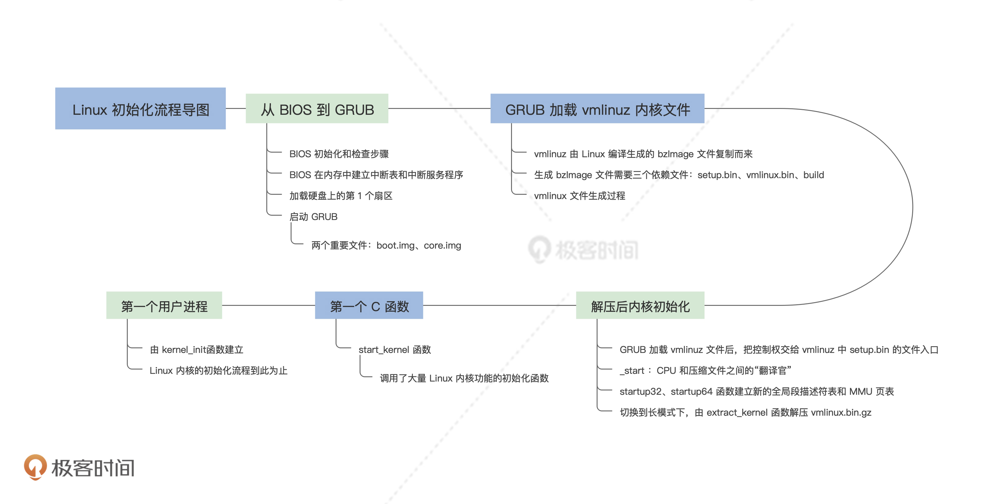

- 00 开篇词 为什么要学写一个操作系统？.md.html
- 00 编辑手记 升级认知，迭代自己的操作系统.md.html
- 01 程序的运行过程：从代码到机器运行.md.html
- 02 几行汇编几行C：实现一个最简单的内核.md.html
- 03 黑盒之中有什么：内核结构与设计.md.html
- 04 震撼的Linux全景图：业界成熟的内核架构长什么样？.md.html
- 05 CPU工作模式：执行程序的三种模式.md.html
- 06 虚幻与真实：程序中的地址如何转换？.md.html
- 07 Cache与内存：程序放在哪儿？.md.html
- 08 锁：并发操作中，解决数据同步的四种方法.md.html
- 09 瞧一瞧Linux：Linux的自旋锁和信号量如何实现？.md.html
- 10 设置工作模式与环境（上）：建立计算机.md.html
- 11 设置工作模式与环境（中）：建造二级引导器.md.html
- 12 设置工作模式与环境（下）：探查和收集信息.md.html
- 13 第一个C函数：如何实现板级初始化？.md.html
- 14 Linux初始化（上）：GRUB与vmlinuz的结构.md.html
- 15 Linux初始化（下）：从_start到第一个进程.md.html
- 16 划分土地（上）：如何划分与组织内存？.md.html
- 17 划分土地（中）：如何实现内存页面初始化？.md.html
- 18 划分土地（下）：如何实现内存页的分配与释放？.md.html
- 19 土地不能浪费：如何管理内存对象？.md.html
- 20 土地需求扩大与保障：如何表示虚拟内存？.md.html
- 21 土地需求扩大与保障：如何分配和释放虚拟内存？.md.html
- 22 瞧一瞧Linux：伙伴系统如何分配内存？.md.html
- 23 瞧一瞧Linux：SLAB如何分配内存？.md.html
- 24 活动的描述：到底什么是进程？.md.html
- 25 多个活动要安排（上）：多进程如何调度？.md.html
- 26 多个活动要安排（下）：如何实现进程的等待与唤醒机制？.md.html
- 27 瞧一瞧Linux：Linux如何实现进程与进程调度_.md.html
- 28 部门分类：如何表示设备类型与设备驱动？.md.html
- 29 部门建立：如何在内核中注册设备？.md.html
- 30 部门响应：设备如何处理内核I_O包？.md.html
- 31 瞧一瞧Linux：如何获取所有设备信息？.md.html
- 32 仓库结构：如何组织文件_.md.html
- 33 仓库划分：文件系统的格式化操作.md.html
- 34 仓库管理：如何实现文件的六大基本操作？.md.html
- 35 瞧一瞧Linux：虚拟文件系统如何管理文件？.md.html
- 36 从URL到网卡：如何全局观察网络数据流动？.md.html
- 37 从内核到应用：网络数据在内核中如何流转.md.html
- 38 从单排到团战：详解操作系统的宏观网络架构.md.html
- 39 瞧一瞧Linux：详解socket实现与网络编程接口.md.html
- 40 瞧一瞧Linux：详解socket的接口实现.md.html
- 41 服务接口：如何搭建沟通桥梁？.md.html
- 42 瞧一瞧Linux：如何实现系统API？.md.html
- 43 虚拟机内核：KVM是什么？.md.html
- 44 容器：如何理解容器的实现机制？.md.html
- 45 ARM新宠：苹果的M1芯片因何而快？.md.html
- 46 AArch64体系：ARM最新编程架构模型剖析.md.html
- LMOS来信：第二季课程带你“手撕”计算机基础.md.html
- 大咖助场 以无法为有法，以无限为有限.md.html
- 用户故事 yiyang：我的上机实验“爬坑指南”.md.html
- 用户故事 成为面向“知识库”的工程师.md.html
- 用户故事 技术人如何做选择，路才越走越宽？.md.html
- 用户故事 操作系统发烧友：看不懂？因为你没动手.md.html
- 用户故事 用好动态调试，助力课程学习.md.html
- 用户故事 艾同学：路虽远，行则将至.md.html
- 结束语 生活可以一地鸡毛，但操作系统却是心中的光.md.html
- 捐赠
15 Linux初始化（下）：从_start到第一个进程
15 Linux初始化（下）：从_start到第一个进程
你好，我是LMOS。
今天我们继续来研究Linux的初始化流程，为你讲解如何解压内核，然后讲解Linux内核第一个C函数。最后，我们会用Linux的第一个用户进程的建立来收尾。
如果用你上手去玩一款新游戏做类比的话，那么上节课只是新手教程，而这节课就是更深入的实战了。后面你会看到很多熟悉的“面孔”，像是我们前面讲过的CPU工作模式、MMU页表等等基础知识，这节课都会得到运用。
解压后内核初始化
下面，我们先从setup.bin文件的入口_start开始，了解启动信息结构，接着由16位main函数切换CPU到保护模式，然后跳入vmlinux.bin文件中的startup_32函数重新加载段描述符。
如果是64位的系统，就要进入startup_64函数，切换到CPU到长模式，最后调用extract_kernel函数解压Linux内核，并进入内核的startup_64函数，由此Linux内核开始运行。
为何要从_start开始
通过上节课对vmlinuz文件结构的研究，我们已经搞清楚了其中的vmlinux.bin是如何产生的，它是由linux/arch/x86/boot/compressed目录下的一些目标文件，以及piggy.S包含的一个vmlinux.bin.gz的压缩文件一起生成的。
vmlinux.bin.gz文件则是由编译的Linux内核所生成的elf格式的vmlinux文件，去掉了文件的符号信息和重定位信息后，压缩得到的。
CPU是无法识别压缩文件中的指令直接运行的，必须先进行解压后，然后解析elf格式的文件，把其中的指令段和数据段加载到指定的内存空间中，才能由CPU执行。
这就需要用到前面的setup.bin文件了，_start正是setup.bin文件的入口，在head.S文件中定义，代码如下。
#linux/arch/x86/boot/head.S
.code16
.section ".bstext", "ax"
.global bootsect_start
bootsect_start:
ljmp $BOOTSEG, $start2
start2:
#……
#这里的512字段bootsector对于硬盘启动是用不到的
#……
.globl _start
_start:
.byte 0xeb # short (2-byte) jump
.byte start_of_setup-1f #这指令是用.byte定义出来的，跳转start_of_setup-1f
#……
#这里是一个庞大的数据结构，没展示出来，与linux/arch/x86/include/uapi/asm/bootparam.h文件中的struct setup_header一一对应。这个数据结构定义了启动时所需的默认参数
#……
start_of_setup:
movw %ds, %ax
movw %ax, %es #ds = es
cld #主要指定si、di寄存器的自增方向，即si++ di++
movw %ss, %dx
cmpw %ax, %dx # ds 是否等于 ss
movw %sp, %dx
je 2f
# 如果ss为空则建立新栈
movw $_end, %dx
testb $CAN_USE_HEAP, loadflags
jz 1f
movw heap_end_ptr, %dx
1: addw $STACK_SIZE, %dx
jnc 2f
xorw %dx, %dx
2:
andw $~3, %dx
jnz 3f
movw $0xfffc, %dx
3: movw %ax, %ss
movzwl %dx, %esp
sti # 栈已经初始化好，开中断
pushw %ds
pushw $6f
lretw # cs=ds ip=6：跳转到标号6处
6:
cmpl $0x5a5aaa55, setup_sig #检查setup标记
jne setup_bad
movw $__bss_start, %di
movw $_end+3, %cx
xorl %eax, %eax
subw %di, %cx
shrw $2, %cx
rep; stosl #清空setup程序的bss段
calll main #调用C语言main函数
setup_header结构
下面我们重点研究一下setup_header结构，这对我们后面的流程很关键。它定义在linux/arch/x86/include/uapi/asm/bootparam.h文件中，如下所示。
struct setup_header {
__u8 setup_sects; //setup大小
__u16 root_flags; //根标志
__u32 syssize; //系统文件大小
__u16 ram_size; //内存大小
__u16 vid_mode;
__u16 root_dev; //根设备号
__u16 boot_flag; //引导标志
//……
__u32 realmode_swtch; //切换回实模式的函数地址
__u16 start_sys_seg;
__u16 kernel_version; //内核版本
__u8 type_of_loader; //引导器类型 我们这里是GRUB
__u8 loadflags; //加载内核的标志
__u16 setup_move_size; //移动setup的大小
__u32 code32_start; //将要跳转到32位模式下的地址
__u32 ramdisk_image; //初始化内存盘映像地址，里面有内核驱动模块
__u32 ramdisk_size; //初始化内存盘映像大小
//……
} __attribute__((packed));
前面提到过，硬盘中MBR是由GRUB写入的boot.img，因此这里的linux/arch/x86/boot/head.S中的bootsector对于硬盘启动是无用的。
GRUB将vmlinuz的setup.bin部分读到内存地址0x90000处，然后跳转到0x90200开始执行，恰好跳过了前面512字节的bootsector，从_start开始。
16位的main函数
我们通常用C编译器编译的代码，是32位保护模式下的或者是64位长模式的，却很少编译成16位实模式下的，其实setup.bin大部分代码都是16位实模式下的。
从前面的代码里，我们能够看到在linux/arch/x86/boot/head.S中调用了main函数，该函数在linux/arch/x86/boot/main.c文件中，代码如下 。
//定义boot_params变量
struct boot_params boot_params __attribute__((aligned(16)));
char *HEAP = _end;
char *heap_end = _end;
//……
void main(void){
//把先前setup_header结构复制到boot_params结构中的hdr变量中，在linux/arch/x86/include/uapi/asm/bootparam.h文件中你会发现boot_params结构中的hdr的类型正是setup_header结构
copy_boot_params();
//初始化早期引导所用的console
console_init();
//初始化堆
init_heap();
//检查CPU是否支持运行Linux
if (validate_cpu()) {
puts("Unable to boot - please use a kernel appropriate " "for your CPU.\n");
die();
}
//告诉BIOS我们打算在什么CPU模式下运行它
set_bios_mode();
//查看物理内存空间布局
detect_memory();
//初始化键盘
keyboard_init();
//查询Intel的(IST)信息。
query_ist();
/*查询APM BIOS电源管理信息。*/
#if defined(CONFIG_APM) || defined(CONFIG_APM_MODULE)
query_apm_bios();
#endif
//查询EDD BIOS扩展数据区域的信息
#if defined(CONFIG_EDD) || defined(CONFIG_EDD_MODULE)
query_edd();
#endif
//设置显卡的图形模式
set_video();
//进入CPU保护模式，不会返回了
go_to_protected_mode();
}
上面这些函数都在linux/arch/x86/boot/目录对应的文件中，都是调用BIOS中断完成的，具体细节，你可以自行查看。
我这里列出的代码只是帮助你理清流程，我们继续看看go_to_protected_mode()函数，在linux/arch/x86/boot/pm.c中，代码如下。
//linux/arch/x86/boot/pm.c
void go_to_protected_mode(void){
//安装切换实模式的函数
realmode_switch_hook();
//开启a20地址线，是为了能访问1MB以上的内存空间
if (enable_a20()) {
puts("A20 gate not responding, unable to boot...\n");
die();
}
//重置协处理器，早期x86上的浮点运算单元是以协处理器的方式存在的
reset_coprocessor();
//屏蔽8259所示的中断源
mask_all_interrupts();
//安装中断描述符表和全局描述符表，
setup_idt();
setup_gdt();
//保护模式下长跳转到boot_params.hdr.code32_start
protected_mode_jump(boot_params.hdr.code32_start, (u32)&boot_params + (ds() << 4));
}
protected_mode_jump是个汇编函数，在linux/arch/x86/boot/pmjump.S文件中。代码逻辑和我们前面（第5节课）学到的保护模式切换是一样的。只是多了处理参数的逻辑，即跳转到boot_params.hdr.code32_start中的地址。
这个地址在linux/arch/x86/boot/head.S文件中设为0x100000，如下所示。
code32_start:
long 0x100000
需要注意的是，GRUB会把vmlinuz中的vmlinux.bin部分，放在1MB开始的内存空间中。通过这一跳转，正式进入vmlinux.bin中。
startup_32函数
startup_32中需要重新加载段描述符，之后计算vmlinux.bin文件的编译生成的地址和实际加载地址的偏移，然后重新设置内核栈，检测CPU是否支持长模式，接着再次计算vmlinux.bin加载地址的偏移，来确定对其中vmlinux.bin.gz解压缩的地址。
如果CPU支持长模式的话，就要设置64位的全局描述表，开启CPU的PAE物理地址扩展特性。再设置最初的MMU页表，最后开启分页并进入长模式，跳转到startup_64，代码如下。
.code32
SYM_FUNC_START(startup_32)
cld
cli
leal (BP_scratch+4)(%esi), %esp
call 1f
1: popl %ebp
subl $ rva(1b), %ebp
#重新加载全局段描述符表
leal rva(gdt)(%ebp), %eax
movl %eax, 2(%eax)
lgdt (%eax)
#……篇幅所限未全部展示代码
#重新设置栈
leal rva(boot_stack_end)(%ebp), %esp
#检测CPU是否支持长模式
call verify_cpu
testl %eax, %eax
jnz .Lno_longmode
#……计算偏移的代码略过
#开启PAE
movl %cr4, %eax
orl $X86_CR4_PAE, %eax
movl %eax, %cr4
#……建立MMU页表的代码略过
#开启长模式
movl $MSR_EFER, %ecx
rdmsr
btsl $_EFER_LME, %eax
#获取startup_64的地址
leal rva(startup_64)(%ebp), %eax
#……篇幅所限未全部展示代码
#内核代码段描述符索和startup_64的地址引压入栈
pushl $__KERNEL_CS
pushl %eax
#开启分页和保护模式
movl $(X86_CR0_PG | X86_CR0_PE), %eax
movl %eax, %cr0
#弹出刚刚栈中压入的内核代码段描述符和startup_64的地址到CS和RIP中，实现跳转，真正进入长模式。
lret
SYM_FUNC_END(startup_32）
startup_64函数
现在，我们终于开启了CPU长模式，从startup_64开始真正进入了64位的时代，可喜可贺。
startup_64函数同样也是在linux/arch/x86/boot/compressed/head64.S文件中定义的。
startup_64函数中，初始化长模式下数据段寄存器，确定最终解压缩地址，然后拷贝压缩vmlinux.bin到该地址，跳转到decompress_kernel地址处，开始解压vmlinux.bin.gz，代码如下。
.code64
.org 0x200
SYM_CODE_START(startup_64)
cld
cli
#初始化长模式下数据段寄存器
xorl %eax, %eax
movl %eax, %ds
movl %eax, %es
movl %eax, %ss
movl %eax, %fs
movl %eax, %gs
#……重新确定内核映像加载地址的代码略过
#重新初始化64位长模式下的栈
leaq rva(boot_stack_end)(%rbx), %rsp
#……建立最新5级MMU页表的代码略过
#确定最终解压缩地址，然后拷贝压缩vmlinux.bin到该地址
pushq %rsi
leaq (_bss-8)(%rip), %rsi
leaq rva(_bss-8)(%rbx), %rdi
movl $(_bss - startup_32), %ecx
shrl $3, %ecx
std
rep movsq
cld
popq %rsi
#跳转到重定位的Lrelocated处
leaq rva(.Lrelocated)(%rbx), %rax
jmp *%rax
SYM_CODE_END(startup_64)
.text
SYM_FUNC_START_LOCAL_NOALIGN(.Lrelocated)
#清理程序文件中需要的BSS段
xorl %eax, %eax
leaq _bss(%rip), %rdi
leaq _ebss(%rip), %rcx
subq %rdi, %rcx
shrq $3, %rcx
rep stosq
#……省略无关代码
pushq %rsi
movq %rsi, %rdi
leaq boot_heap(%rip), %rsi
#准备参数：被解压数据的开始地址
leaq input_data(%rip), %rdx
#准备参数：被解压数据的长度
movl input_len(%rip), %ecx
#准备参数：解压数据后的开始地址
movq %rbp, %r8
#准备参数：解压数据后的长度
movl output_len(%rip), %r9d
#调用解压函数解压vmlinux.bin.gz，返回入口地址
call extract_kernel
popq %rsi
#跳转到内核入口地址
jmp *%rax
SYM_FUNC_END(.Lrelocated)
上述代码中最后到了extract_kernel函数，它就是解压内核的函数，下面我们就来研究它。
extract_kernel函数
从startup_32函数到startup_64函数，其间经过了保护模式、长模式，最终到达了extract_kernel函数，extract_kernel函数根据piggy.o中的信息从vmlinux.bin.gz中解压出vmlinux。
根据前面的知识点，我们知道vmlinux正是编译出Linux内核elf格式的文件，只不过它被去掉了符号信息。所以，extract_kernel函数不仅仅是解压，还需要解析elf格式。
extract_kernel函数是在linux/arch/x86/boot/compressed/misc.c文件中定义的。
asmlinkage __visible void *extract_kernel(
void *rmode, memptr heap,
unsigned char *input_data,
unsigned long input_len,
unsigned char *output,
unsigned long output_len
){
const unsigned long kernel_total_size = VO__end - VO__text;
unsigned long virt_addr = LOAD_PHYSICAL_ADDR;
unsigned long needed_size;
//省略了无关性代码
debug_putstr("\nDecompressing Linux... ");
//调用具体的解压缩算法解压
__decompress(input_data, input_len, NULL, NULL, output, output_len, NULL, error);
//解压出的vmlinux是elf格式，所以要解析出里面的指令数据段和常规数据段
//返回vmlinux的入口点即Linux内核程序的开始地址
parse_elf(output);
handle_relocations(output, output_len, virt_addr); debug_putstr("done.\nBooting the kernel.\n");
return output;
}
正如上面代码所示，extract_kernel函数调用__decompress函数，对vmlinux.bin.gz使用特定的解压算法进行解压。解压算法是编译内核的配置选项决定的。
但是，__decompress函数解压出来的是vmlinux文件是elf格式的，所以还要调用parse_elf函数进一步解析elf格式，把vmlinux中的指令段、数据段、BSS段，根据elf中信息和要求放入特定的内存空间，返回指令段的入口地址。
请你注意，在Lrelocated函数的最后一条指令：jmp *rax，其中的rax中就是保存的extract_kernel函数返回的入口点，就是从这里开始进入了Linux内核。
Linux内核的startup_64
这里我提醒你留意，此时的startup_64函数并不是之前的startup_64函数，也不参与前面的链接工作。
这个startup_64函数定义在linux/arch/x86/kernel/head_64.S文件中，它是内核的入口函数，如下所示。
#linux/arch/x86/kernel/head_64.S
.code64
SYM_CODE_START_NOALIGN(startup_64)
#切换栈
leaq (__end_init_task - SIZEOF_PTREGS)(%rip), %rsp
#跳转到.Lon_kernel_cs:
pushq $__KERNEL_CS
leaq .Lon_kernel_cs(%rip), %rax
pushq %rax
lretq
.Lon_kernel_cs:
#对于第一个CPU，则会跳转secondary_startup_64函数中1标号处
jmp 1f
SYM_CODE_END(startup_64)
上述代码中省略了和流程无关的代码，对于SMP系统加电之后，总线仲裁机制会选出多个CPU中的一个CPU，称为BSP，也叫第一个CPU。它负责让BSP CPU先启动，其它CPU则等待BSP CPU的唤醒。
这里我来分情况给你说说。对于第一个启动的CPU，会跳转secondary_startup_64函数中1标号处，对于其它被唤醒的CPU则会直接执行secondary_startup_64函数。
接下来，我给你快速过一遍secondary_startup_64函数，后面的代码我省略了这个函数对更多CPU特性（设置GDT、IDT，处理了MMU页表等）的检查，因为这些工作我们早已很熟悉了，代码如下所示。
SYM_CODE_START(secondary_startup_64)
#省略了大量无关性代码
1:
movl $(X86_CR4_PAE | X86_CR4_PGE), %ecx
#ifdef CONFIG_X86_5LEVEL
testl $1, __pgtable_l5_enabled(%rip)
jz 1f
orl $X86_CR4_LA57, %ecx
1:
#endif
#省略了大量无关性代码
.Ljump_to_C_code:
pushq $.Lafter_lret
xorl %ebp, %ebp
#获取x86_64_start_kernel函数地址赋给rax
movq initial_code(%rip), %rax
pushq $__KERNEL_CS
#将x86_64_start_kernel函数地址压入栈中
pushq %rax
#弹出__KERNEL_CS 和x86_64_start_kernel函数地址到CS：RIP完成调用
lretq
.Lafter_lret:
SYM_CODE_END(secondary_startup_64)
#保存了x86_64_start_kernel函数地址
SYM_DATA(initial_code, .quad x86_64_start_kernel)
在secondary_startup_64函数一切准备就绪之后，最后就会调用x86_64_start_kernel函数，看它的名字好像是内核的开始函数，但真的是这样吗，我们一起看看才知道。
Linux内核的第一个C函数
若不是经历了前面的分析讲解。要是我问你Linux内核的第一个C函数是什么，你可能无从说起，就算一通百度之后，仍然无法确定。
但是，只要我们跟着代码的执行流程，就会发现在secondary_startup_64函数的最后，调用的x86_64_start_kernel函数是用C语言写的，那么它一定就是Linux内核的第一个C函数。它在linux/arch/x86/kernel/head64.c文件中被定义，这个文件名你甚至都能猜出来，如下所示。
asmlinkage __visible void __init x86_64_start_kernel(char * real_mode_data){
//重新设置早期页表
reset_early_page_tables();
//清理BSS段
clear_bss();
//清理之前的顶层页目录
clear_page(init_top_pgt);
//复制引导信息
copy_bootdata(__va(real_mode_data));
//加载BSP CPU的微码
load_ucode_bsp();
//让顶层页目录指向重新设置早期页表
init_top_pgt[511] = early_top_pgt[511];
x86_64_start_reservations(real_mode_data);
}
void __init x86_64_start_reservations(char *real_mode_data){
//略过无关的代码
start_kernel();
}
x86_64_start_kernel函数中又一次处理了页表，处理页表就是处理Linux内核虚拟地址空间，Linux虚拟地址空间是一步步完善的。
然后，x86_64_start_kernel函数复制了引导信息，即struct boot_params结构体。最后调用了x86_64_start_reservations函数，其中处理了平台固件相关的东西，就是调用了大名鼎鼎的start_kernel函数。
有名的start_kernel函数
start_kernel函数之所以有名，这是因为在互联网上，在各大Linux名著之中，都会大量宣传它Linux内核中的地位和作用，正如其名字表达的含意，这是内核的开始。
但是问题来了。我们一路走来，发现start_kernel函数之前有大量的代码执行，那这些代码算不算内核的开始呢？当然也可以说那就是内核的开始，也可以说是前期工作。
其实，start_kernel函数中调用了大量Linux内核功能的初始化函数，它定义在/linux/init/main.c文件中。
void start_kernel(void){
char *command_line;
char *after_dashes;
//CPU组早期初始化
cgroup_init_early();
//关中断
local_irq_disable();
//ARCH层初始化
setup_arch(&command_line);
//日志初始化
setup_log_buf(0);
sort_main_extable();
//陷阱门初始化
trap_init();
//内存初始化
mm_init();
ftrace_init();
//调度器初始化
sched_init();
//工作队列初始化
workqueue_init_early();
//RCU锁初始化
rcu_init();
//IRQ 中断请求初始化
early_irq_init();
init_IRQ();
tick_init();
rcu_init_nohz();
//定时器初始化
init_timers();
hrtimers_init();
//软中断初始化
softirq_init();
timekeeping_init();
mem_encrypt_init();
//每个cpu页面集初始化
setup_per_cpu_pageset();
//fork初始化建立进程的
fork_init();
proc_caches_init();
uts_ns_init();
//内核缓冲区初始化
buffer_init();
key_init();
//安全相关的初始化
security_init();
//VFS数据结构内存池初始化
vfs_caches_init();
//页缓存初始化
pagecache_init();
//进程信号初始化
signals_init();
//运行第一个进程
arch_call_rest_init();
}
start_kernel函数我如果不做精简，会有200多行，全部都是初始化函数，我只留下几个主要的初始化函数，这些函数的实现细节我们无需关心。
可以看到，Linux内核所有功能的初始化函数都是在start_kernel函数中调用的，这也是它如此出名，如此重要的原因。
一旦start_kernel函数执行完成，Linux内核就具备了向应用程序提供一系列功能服务的能力。这里对我们而言，我们只关注一个arch_call_rest_init函数。下面我们就来研究它。 如下所示。
void __init __weak arch_call_rest_init(void){
rest_init();
}
这个函数其实非常简单，它是一个包装函数，其中只是直接调用了rest_init函数。
rest_init函数的重要功能就是建立了两个Linux内核线程，我们看看精简后的rest_init函数：
noinline void __ref rest_init(void){ struct task_struct *tsk;
int pid;
//建立kernel_init线程
pid = kernel_thread(kernel_init, NULL, CLONE_FS);
//建立khreadd线程
pid = kernel_thread(kthreadd, NULL, CLONE_FS | CLONE_FILES);
}
Linux内核线程可以执行一个内核函数， 只不过这个函数有独立的线程上下文，可以被Linux的进程调度器调度，对于kernel_init线程来说，执行的就是kernel_init函数。
Linux的第一个用户进程
当我们可以建立第一个用户进程的时候，就代表Linux内核的初始流程已经基本完成。
经历了“长途跋涉”，我们也终于走到了这里。Linux内核的第一个用户态进程是在kernel_init线程建立的，而kernel_init线程执行的就是kernel_init函数。那kernel_init函数到底做了什么呢？
static int __ref kernel_init(void *unused){
int ret;
if (ramdisk_execute_command) {
ret = run_init_process(ramdisk_execute_command);
if (!ret)
return 0;
pr_err("Failed to execute %s (error %d)\n",ramdisk_execute_command, ret);
}
if (execute_command) {
ret = run_init_process(execute_command);
if (!ret)
return 0;
panic("Requested init %s failed (error %d).", execute_command, ret);
}
if (!try_to_run_init_process("/sbin/init") || !try_to_run_init_process("/etc/init") || !try_to_run_init_process("/bin/init") || !try_to_run_init_process("/bin/sh"))
return 0;
panic("No working init found. Try passing init= option to kernel. " "See Linux Documentation/admin-guide/init.rst for guidance.");
}
结合上述代码，可以发现ramdisk_execute_command和execute_command都是内核启动时传递的参数，它们可以在GRUB启动选项中设置。
比方说，通常引导内核时向command line传递的参数都是 init=xxx ，而对于initrd 则是传递 rdinit=xxx 。
但是，通常我们不会传递参数，所以这个函数会执行到上述代码的15行，依次尝试以/sbin/init、/etc/init、/bin/init、/bin/sh这些文件为可执行文件建立进程，但是只要其中之一成功就行了。
try_to_run_init_process和run_init_process函数的核心都是调用sys_fork函数建立进程的，这里我们不用关注它的实现细节。
到这里，Linux内核已经建立了第一个进程，Linux内核的初始化流程也到此为止了。
重点回顾
又到了课程尾声，Linux初始化流程的学习我们就告一段落了，我来给你做个总结。
今天我们讲得内容有点多，我们从_start开始到startup32、startup64函数 ，到extract_kernel函数解压出真正的Linux内核文件vmlinux开始，然后从Linux内核的入口函数startup_64到Linux内核第一个C函数，最后接着从Linux内核start_kernel函数的建立 ，说到了第一个用户进程。
一起来回顾一下这节课的重点：
1.GRUB加载vmlinuz文件之后，会把控制权交给vmlinuz文件的setup.bin的部分中_start，它会设置好栈，清空bss，设置好setup_header结构，调用16位main切换到保护模式，最后跳转到1MB处的vmlinux.bin文件中。
2.从vmlinux.bin文件中startup32、startup64函数开始建立新的全局段描述符表和MMU页表，切换到长模式下解压vmlinux.bin.gz。释放出vmlinux文件之后，由解析elf格式的函数进行解析，释放vmlinux中的代码段和数据段到指定的内存。然后调用其中的startup_64函数，在这个函数的最后调用Linux内核的第一个C函数。
3.Linux内核第一个C函数重新设置MMU页表，随后便调用了最有名的start_kernel函数， start_kernel函数中调用了大多数 Linux内核功能性初始化函数，在最后调用rest_init函数建立了两个内核线程，在其中的kernel_init线程建立了第一个用户态进程。

不知道你感觉到没有，Linux的启动流程相比于我们的Cosmos启动流程复杂得多。
Linux之所以如此复杂，是因为它把完成各种功能的模块组装了一起，而我们Cosmos则把内核之前的初始化工作，分离出来，形成二级引导器，二级引导器也是由多文件模块组成的，最后用我们的映像工具把它们封装在一起。
对比之下，你就可以明白，软件工程模块化是多么重要了。
思考题
你能指出上文中Linux初始化流程里，主要函数都被链接到哪些对应的二进制文件中了？
欢迎你在留言区跟我交流互动，也欢迎你把这节课分享给同事、朋友。
我是LMOS，我们下节课见！
© 2019 - 2023 Liangliang Lee. Powered by gin and hexo-theme-book.